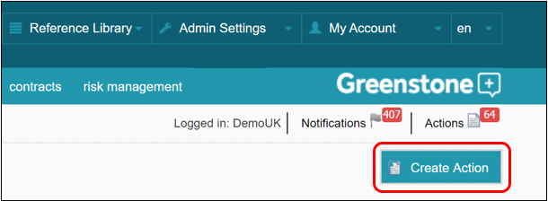

Actions can be created manually using the action form launched from most screens in Supply-Chain Sustainability (SCS) by clicking the ‘Create Action’ button in the top right-hand corner of the screen.
However, you can also create Actions for individual and multiple suppliers using the risk management function (see Risk Management). These actions are automatically populated with required action text (see Admin Settings > Flagged Questions).
